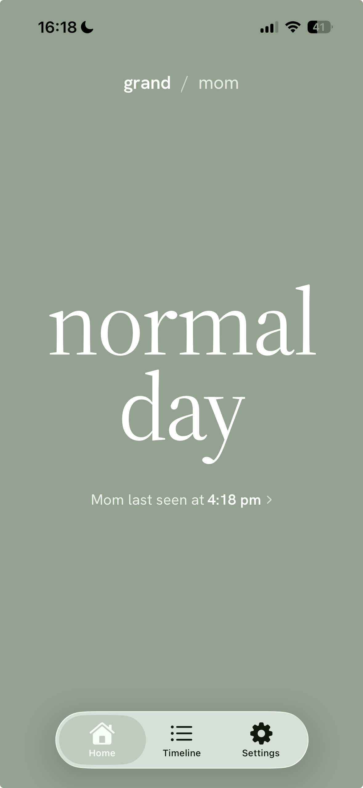
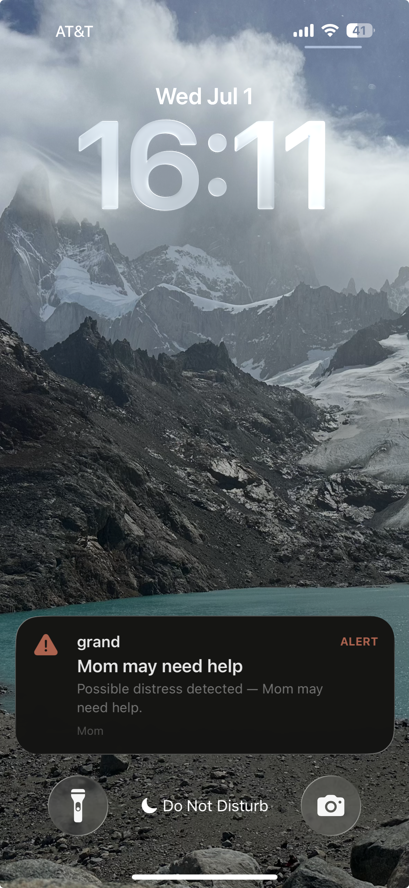

The sensors
Grand sensors
A few small sensors that plug into any outlet and connect to the hub over Wi‑Fi. They use motion and audio detection to make sure your loved one is safe and healthy.
Care at home
A small hub and a few discreet sensors to flag when something’s off — no cameras, no wearables, nothing to charge.
The worry
Your mom lives alone and that’s not going to change. She’s doing great! Church every Sunday, book club, hobbies... But she did have a fall last year. Every morning there’s a nagging thought in the back of your mind. What if something happened and you just don’t know it yet?
You’ve probably already thought about…
The setup
There’s a better way to know they’re okay. A small hub and a few sensors. No cameras, nothing to wear, nothing to charge.
The sensors
A few small sensors that plug into any outlet and connect to the hub over Wi‑Fi. They use motion and audio detection to make sure your loved one is safe and healthy.

The hub
Processes the data the sensors send and pings you if something is off. No audio is ever sent to the cloud, so your parent won’t feel like their privacy is being compromised.
How it works
Grand uses motion and audio signals to build a picture of your parent’s normal routine, then watches for changes that might mean it’s time to check in. Grand can also notify you if something more serious may be happening, so you have peace of mind without putting a camera in the home.
Morning routine
Grand can recognize when a wakeup time seems significantly different from the usual routine.
Kitchen use
Grand can identify the audio and motion signals that typically accompany meal time.
Restroom routine
Grand can keep tabs on trips to the restroom without invading privacy with a camera.
Emergency indicators
Most importantly, Grand can notice sudden changes in motion or audio activity that may indicate an emergency. When that happens, a real person from Grand reaches out to confirm they’re okay.
Caregiver experience
Open the app and you see today at a glance: is the day broadly normal, or is there something worth a check‑in? And in the worst‑case scenario, we do more than ping you — a real person from Grand checks on her directly.
See at a glance whether the day broadly looks like your parent’s normal routine.
Unusual inactivity or a shift in the pattern is surfaced — without exposing a live view into the home.
The moments that matter are framed clearly and sent to you, tuned to avoid false alarms.


The Grand call center
When Grand detects a possible emergency, a real person from the U.S. based Grand call center calls your parent through the hub and sensors — no phone to find, no button to press.
A Grand agent speaks with your parent through the hub or the nearest sensor and asks if she’s okay.
If she’s fine, we’ll leave a brief note in your app.
If she needs help — or doesn’t answer — our agent notifies emergency services right away.
You’re notified at each step of the triage process, and you can join the call with your loved one at any moment.
Early access
Grand launches Fall 2026. Sign up to be notified when Grand is available. No commitment required.